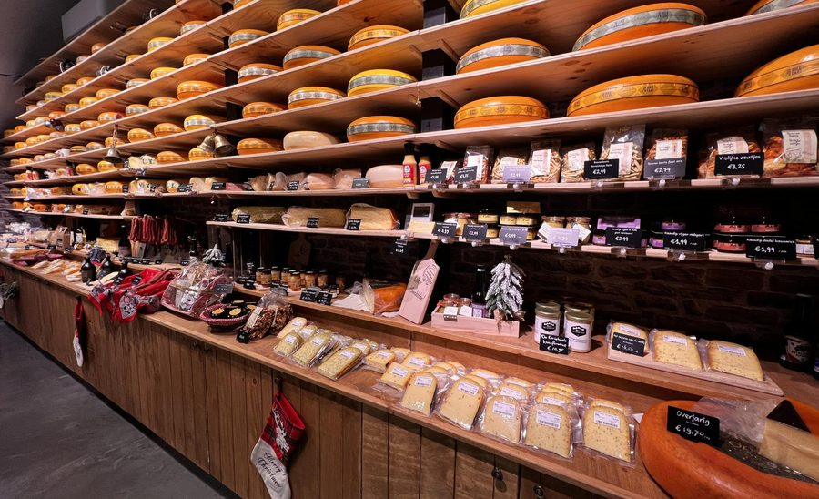
Kaas en zuivel
Boerenkaas, abdijkaas en kruidenkazen, plus verse boerenzuivel van een echt familiebedrijf.
Ook vacumerenMeer info
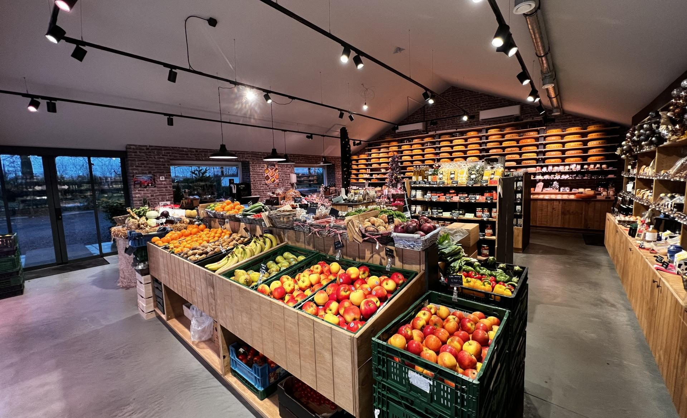
De boerderijwinkel van familie Verhaaf in Breda. Kaas, vlees, groente en fruit van onze eigen boerderij en van boeren uit de buurt. Kom langs, proef en geniet!
We gaan met de seizoenen mee en werken samen met boeren, telers en kaasmakers uit de omgeving. Kort, eerlijk en vers.

Boerenkaas, abdijkaas en kruidenkazen, plus verse boerenzuivel van een echt familiebedrijf.
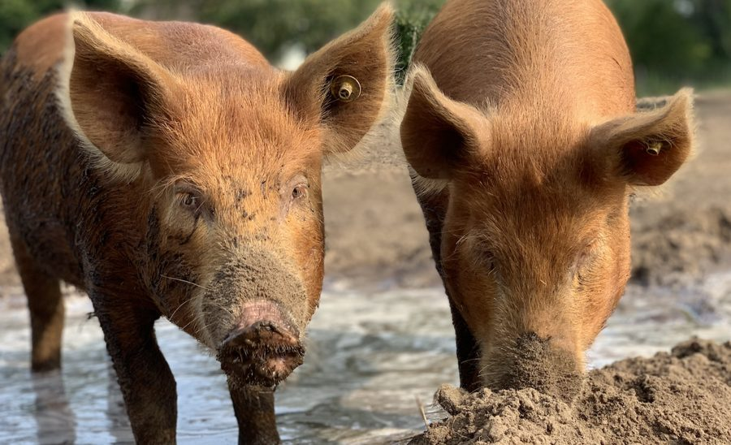
Rundvlees van een boerderij waar de kalveren bij de moeder lopen, en varkensvlees van onze eigen scharrelvarkens.
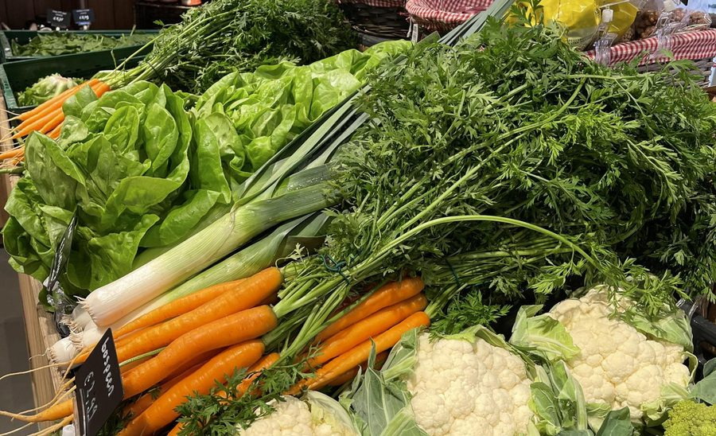
A-kwaliteit van Nederlandse bodem, vaak rechtstreeks van het land. Ook hét adres voor vergeten groenten.
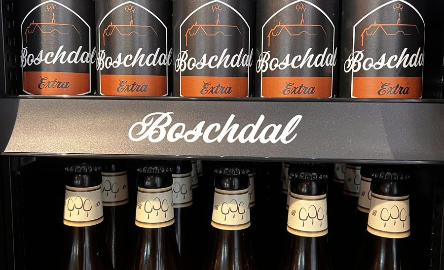
Bier uit de omgeving, pure sappen, jams, eieren, meel en nog veel meer boerendelicatessen.
Geef je bestelling gerust door. Ook bedrijven en restaurants kunnen bij ons terecht voor fruitmanden en AGF.
Kies een van onze pakketten of stel er zelf een samen. Van € 29,95 tot € 74,95.
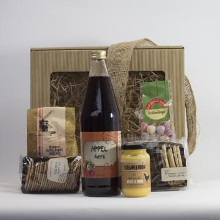
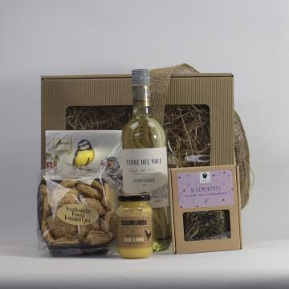
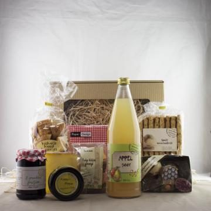
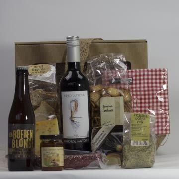
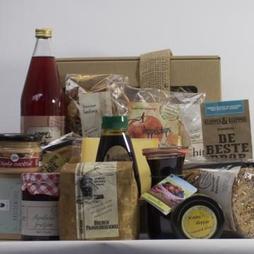
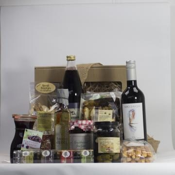
Een pakket op maat, ook voor je organisatie. Je bepaalt zelf de inhoud en de verpakking. Ook voor wijnpakketten, vriendinnentasjes en kerstpakketten ben je bij ons aan het goede adres.
Ons assortiment wisselt, dus producten kunnen afwijken. Die vervangen we door vergelijkbare artikelen.
We houden van bijzonder en verscheidenheid. Onze runderen staan het hele jaar buiten.
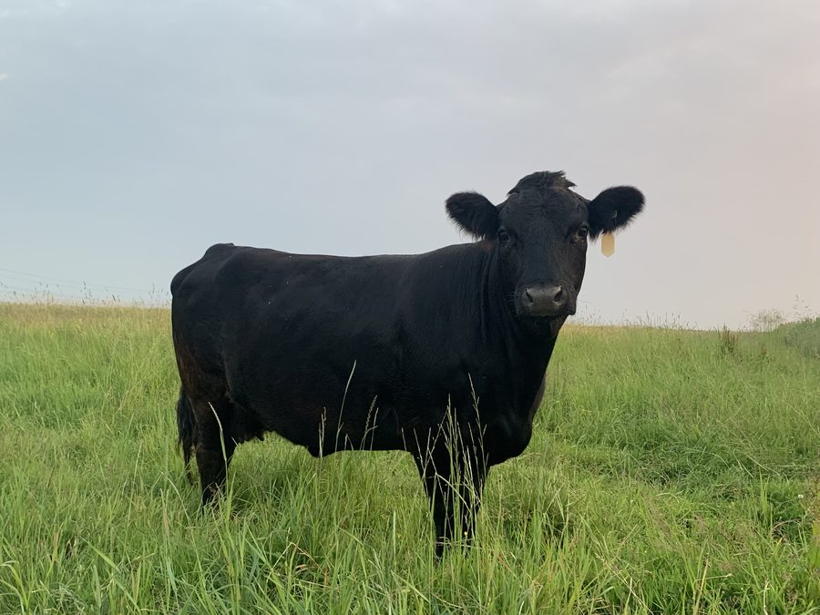
Een van de kleinste runderrassen ter wereld, maar één meter hoog. Onze koeien staan ingeschreven bij het Nederlandse Dexter stamboek. De kalveren gaan na minimaal 6 maanden naar campings, zorgboerderijen en kinderboerderijen.
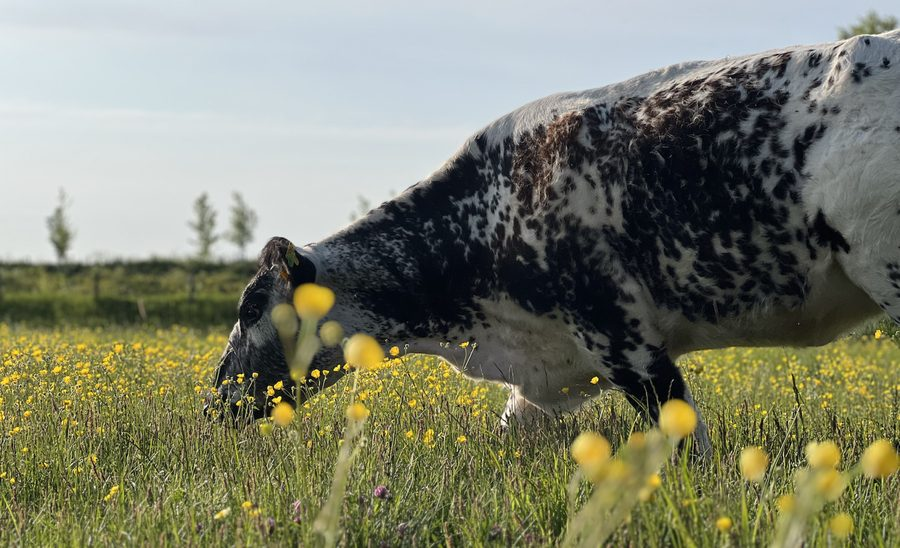
Een Canadees ras uit Saskatchewan: winterhard, hoornloos, vriendelijk en rustig. Ideaal om jaarrond buiten te grazen. Hun vlees verkopen we in onze winkel.
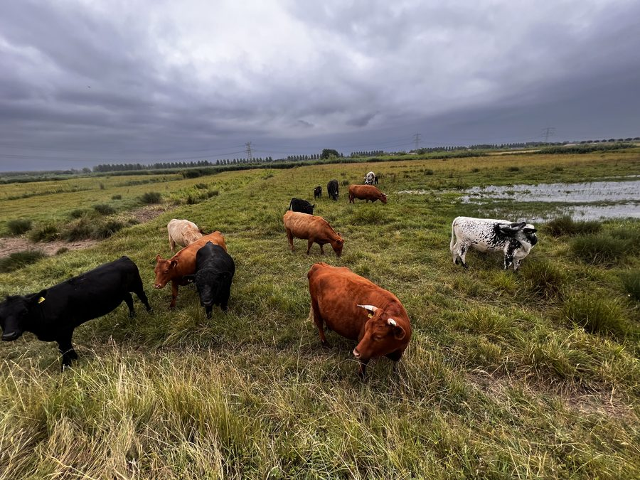
Van april tot en met oktober grazen onze runderen in een groot natuurgebied in de Biesbosch. Zo helpen ze oude landbouwgrond om te vormen tot natuur met veel kruiden en biodiversiteit.
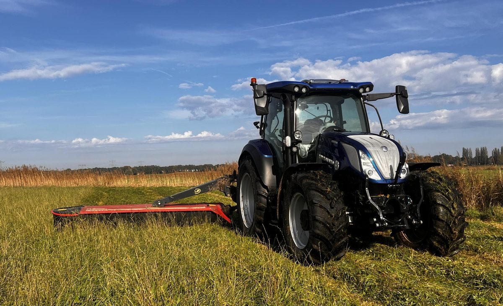
Voor paarden, kleinvee en hobbydieren. Onze midibalen maken we van A tot Z zelf: maaien, schudden, harken, persen en transporteren. Zo weten we precies wat je krijgt.
We bezorgen ook aan huis. Daarnaast doen we transport- en voorladerwerk, graswinning als loonwerk en kopen we het hele jaar gras op stam in de regio.
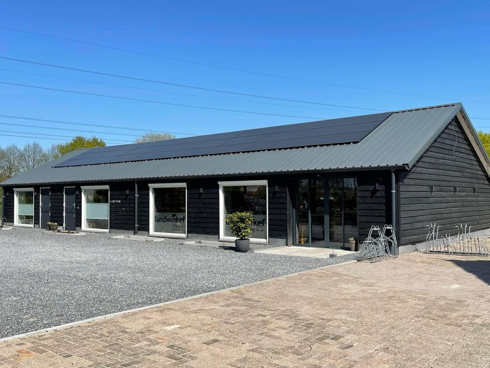
Een boerderijwinkel was altijd al onze droom. Na anderhalf jaar keihard bikkelen hebben we de oude varkensstallen omgebouwd tot een warme winkel waar iedereen welkom is. Het interieur hebben we helemaal zelf gemaakt.
We liggen aan wandel- en fietsroutes tussen de Haagse Beemden en Prinsenbeek, dus ook leuk voor een fietstochtje met het gezin.
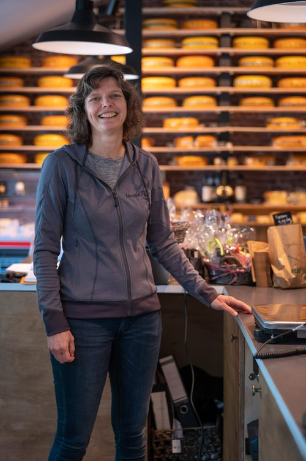
LiesbethEigenaresseDe winkel is mijn passie!
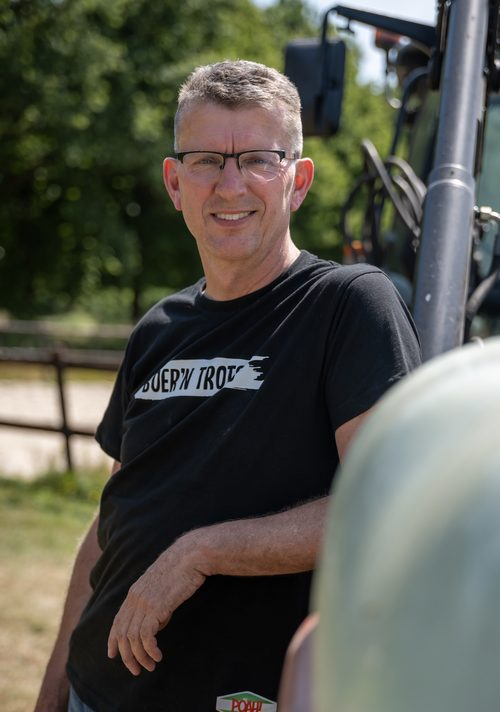
RichardEigenaarKan niet bestaat niet!
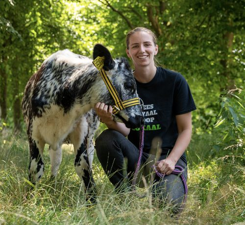
LotteDochter en mede-eigenaarStilzitten is niks voor mij.
Proef, geniet en beleef. Wil je iets proeven? Vraag het gerust in de winkel.
Vragen, een bestelling of een offerte voor pakketten? Bel of mail ons.